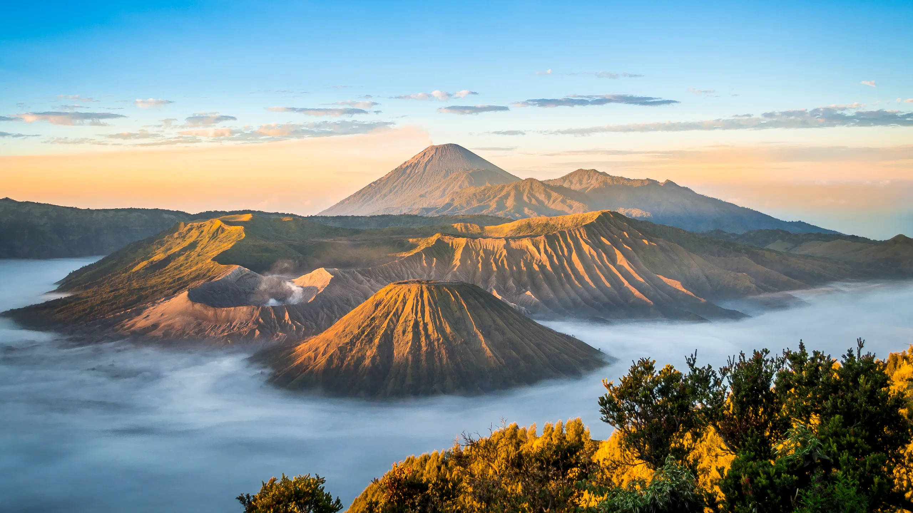
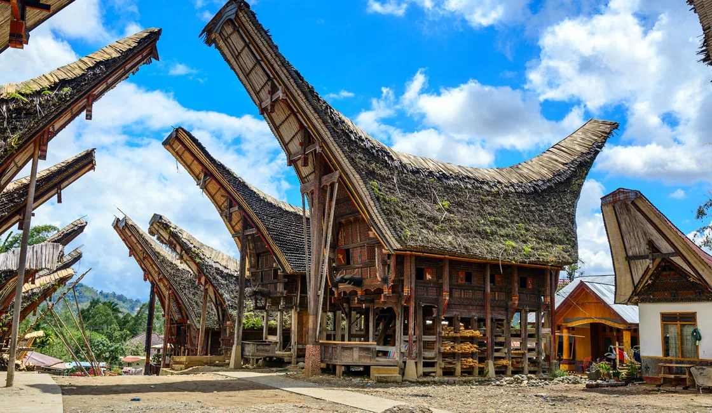
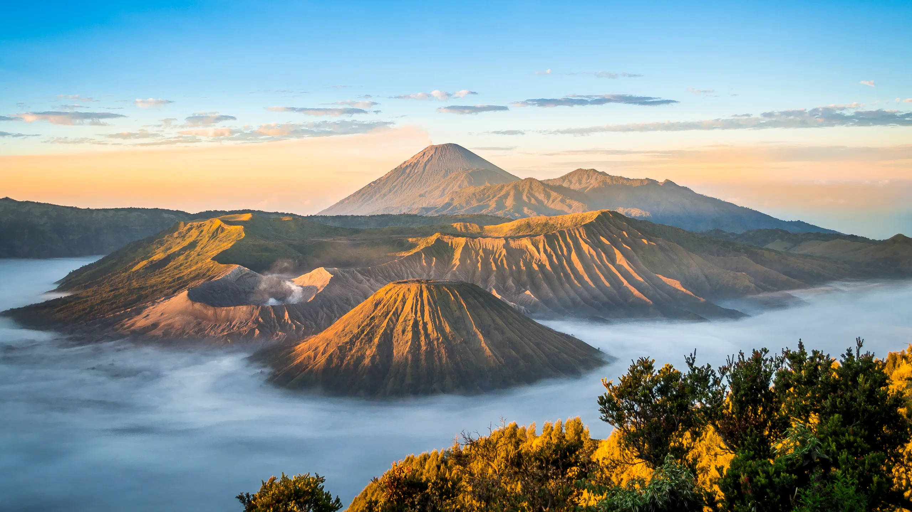
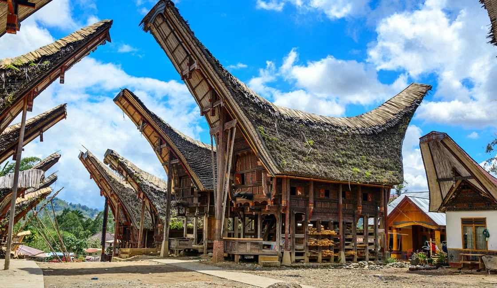

Indonesia, officially the Republic of Indonesia, is a country in Southeast Asia and Oceania between the Indian and Pacific Oceans. It consists of more than 17,000 islands, including Sumatra, Java, Sulawesi, as well as parts of Borneo and New Guinea. Indonesia is the largest archaeological state in the world and the 14th largest country by area - 1,904,569 square kilometers (735,358 square miles). Considering that there are tens of thousands of islands to explore, it can be difficult to choose the best place to travel in Indonesia. The archipelago, as diverse as it is dramatic, has many attractive attractions: the cultural core of Ubud, a colossal Buddhist stupa towering over Java, turquoise crater lakes and rocky peaks of Gunung Rinjani, dazzling white sand beaches on the Gili Islands.

 
